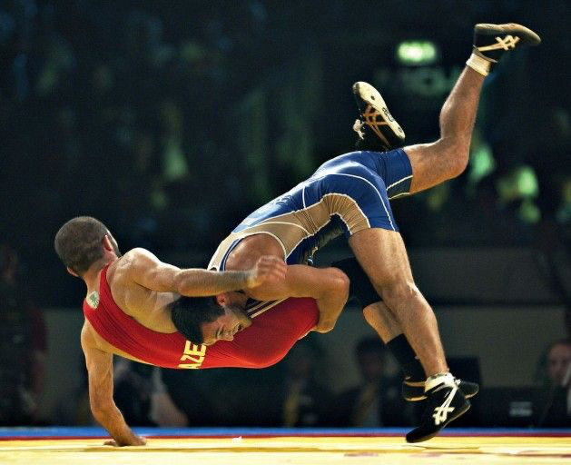

Why Wrestling is Not as Dangerous As You Think
Three two-minute periods. That is all it takes for high school athletes to wrestle their way to a victory or loss. Despite the seemingly small window, it’s also more than enough time for injuries galore. Pulled knees…